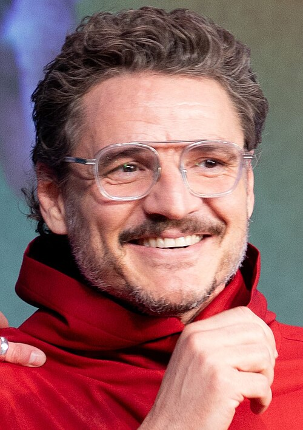
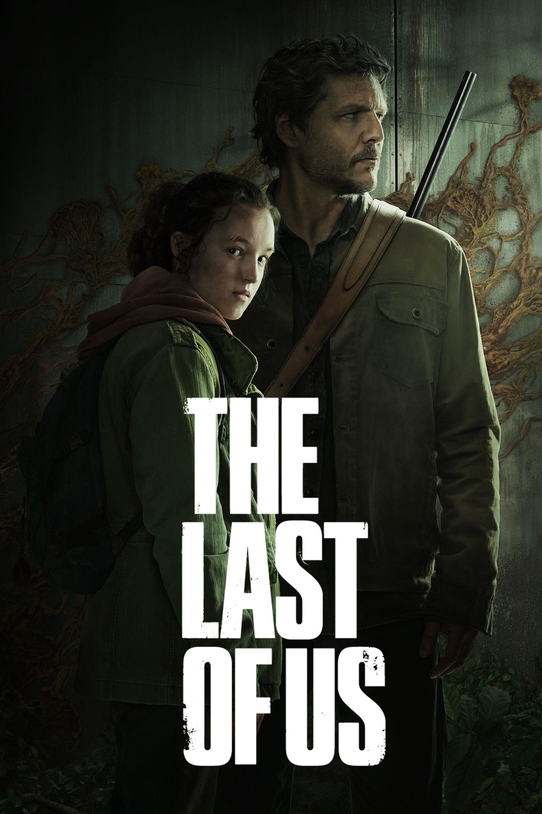
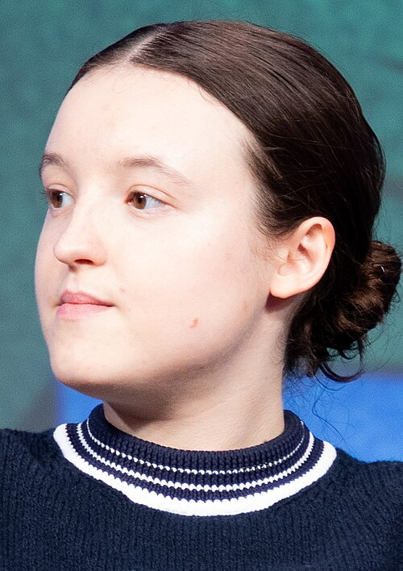
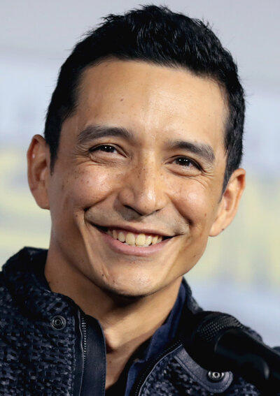
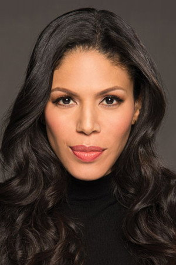
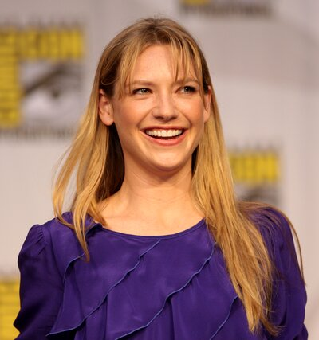
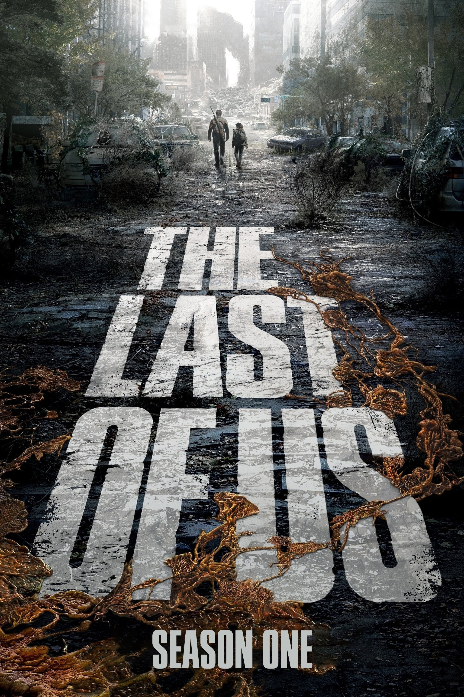

Педро Паскаль
Джоэл Миллер

HBO Original Series
«Когда ты потерян во тьме, ищи свет». История о цене надежды, доверии и дороге через страну, которую почти полностью забрала инфекция.
Сюжет
Через двадцать лет после вспышки кордицепс-инфекции общество распалось на карантинные зоны, военные режимы, контрабандистов и выживших, которые держатся за любую форму порядка. Джоэл Миллер получает задание вывезти Элли из Бостона. Она не просто подросток с острым языком: ее иммунитет может стать ключом к вакцине.
Дорога через постапокалиптическую Америку меняет сделку на связь, а связь на выбор, от которого зависит не только их будущее. Первый сезон держится на контрасте: жестокий мир вокруг и почти невозможная нежность между двумя людьми, которые давно перестали ждать спасения.
Главные актеры

Джоэл Миллер

Элли Уильямс

Томми Миллер

Марлин

Тесс

Сезон / эпизоды
Сезон адаптирует события первой игры и историю Left Behind, расширяя линии Билла и Фрэнка, Генри и Сэма, Райли, Томми и Марии.
Не аттракцион про зараженных, а камерная драма о доверии: экшен появляется резко, но эмоциональный удар почти всегда важнее масштаба.
Финальная дилемма оставляет зрителя в серой зоне: любовь, страх потери и надежда на лекарство сталкиваются без простого ответа.
Награды
Номинации первого сезона, включая актерские, сценарные и режиссерские категории.
Победы за ремесло, грим, звук, визуальные эффекты и гостевые роли.
Победы за мужскую роль Педро Паскаля и работу каскадерского ансамбля.
Сериал вошел в список лучших телевизионных программ года по версии AFI.